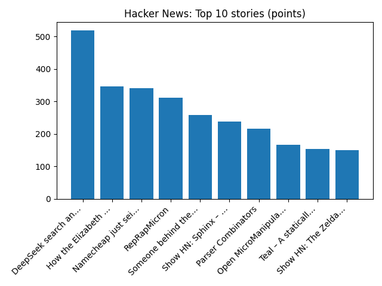

YOUR DAILY INTELLIGENCE BRIEF · 2026-10-18
The world, in focus.
No recent news coverage available.
🌍 Global coverage
🌌 Beyond Earth

Sonified: Eagle Nebula Pillars
📜 On this day
- 2019 NASA Astronauts Jessica Meir and Christina Koch take part in the first all-female spacewalk when they venture out of the International Space Station to replace a power controller.
- 2019 Riots in Chile's capital Santiago escalate into open battles, with attacks reported at nearly all of the city's 164 Metro stations. President Sebastián Piñera later announces a 15-day state of emergency in the capital.
- 2007 Karachi bombing: A suicide attack on a motorcade carrying former Pakistani Prime Minister Benazir Bhutto kills 139 and wounds 450 more. Bhutto herself is uninjured.
- 2003 Bolivian gas conflict: Bolivian President Gonzalo Sánchez de Lozada is forced to resign and leave Bolivia.
📈 Topic activity
Source health: 24/24 healthy
View original detailed report
Daily Knowledge Garden — 2026-10-18
🧭 Daily Summary
Global coverage includes Trump says suspension of Russia sanctions is to keep peace negotiations going; Macron condemns those who 'sought to bring down the Republic' after rioting mars nationwide protests - AP News; What we know so far about deadly fire at Canadian military base. Local coverage includes Frost Advisory and Freeze Warning Issued Again for Parts of Maryland And Northern Virginia - The MoCo Show -; Cold start gives way to sunny skies across DC region Sunday - WTOP News.
🌍 Global News (cross-source)
- Trump says suspension of Russia sanctions is to keep peace negotiations going — BBC — World
- Macron condemns those who 'sought to bring down the Republic' after rioting mars nationwide protests - AP News — AP — Headlines (Google News)
- What we know so far about deadly fire at Canadian military base — BBC — World
- Brazil's Bolsonaro, Lula face off in first debate as supporters fill streets - Reuters — Reuters — Headlines (Google News)
- Ukraine launches more than 1,000 drones at Russia as spat between Trump and Zelenskyy continues - AP News — AP — Headlines (Google News)
🏙️ Local News
- Frost Advisory and Freeze Warning Issued Again for Parts of Maryland And Northern Virginia - The MoCo Show - — Google News — Northern Virginia
- Cold start gives way to sunny skies across DC region Sunday - WTOP News — Google News — Northern Virginia
- Three Maryland Bakeries Make List of Best Bakeries in D.C., Maryland, and Northern Virginia - The MoCo Show - — Google News — Northern Virginia
- Frost Advisory and Freeze Warnings in Effect Across Parts of Maryland And Northern Virginia - The MoCo Show - — Google News — Northern Virginia weather
- Alexandria Home Prices Fall 11% in September as Sales Slow - Alexandria Living Magazine — Google News — Northern Virginia
🚀 Hacker News (Top 5)
- DeepSeek-v4.1-Flash-1017 — 893 points, 671 comments
- You could have invented transformers from memory — 581 points, 130 comments
- Bleached corals thrive within days when touching healthy neighbour — 485 points, 106 comments
- Pele – Mermaid diagrams as themeable SVG — 479 points, 41 comments
- Furifont, a Japanese font that shows furigana — 364 points, 76 comments

🌍 Wikipedia — On This Day (selected)
- 2019 — NASA Astronauts Jessica Meir and Christina Koch take part in the first all-female spacewalk when they venture out of the International Space Station to replace a power controller.
- 2019 — Riots in Chile's capital Santiago escalate into open battles, with attacks reported at nearly all of the city's 164 Metro stations. President Sebastián Piñera later announces a 15-day state of emergency in the capital.
- 2007 — Karachi bombing: A suicide attack on a motorcade carrying former Pakistani Prime Minister Benazir Bhutto kills 139 and wounds 450 more. Bhutto herself is uninjured.
- 2003 — Bolivian gas conflict: Bolivian President Gonzalo Sánchez de Lozada is forced to resign and leave Bolivia.
- 1992 — Merpati Nustantara Airlines Flight 5601 crashes into Mount Papandayan near the town of Garut in West Java, Indonesia, killing 31.
🎲 Wikipedia — Random Article
Dunay Islands
The Dunay Islands, or Duunay Aryta, (Russian: Острова Дунай) is a group of islands in the Laptev Sea. They are located close to the mouths of the Lena River, off the northwestern shores of the Lena Delta.
https://en.wikipedia.org/wiki/Dunay_Islands
🌌 NASA APOD
Sonified: Eagle Nebula Pillars
Feed Health
- Reuters — Headlines (Google News): ok (15 articles)
- Reuters — World (Google News): ok (15 articles)
- Reuters — Business (Google News): ok (15 articles)
- BBC — World: ok (15 articles)
- BBC — Tech: ok (15 articles)
- BBC — Business: ok (15 articles)
- BBC — Science: ok (15 articles)
- AP — Headlines (Google News): ok (15 articles)
- AP — Politics (Google News): ok (15 articles)
- AP — Business (Google News): ok (15 articles)
- NPR — Top Stories: ok (10 articles)
- NPR — Politics: ok (10 articles)
- NPR — Business: ok (10 articles)
- NPR — Science: ok (10 articles)
- NPR — Technology: ok (10 articles)
- ScienceNews: ok (15 articles)
- ScienceDaily — Top: ok (15 articles)
- Nature — Technology: ok (15 articles)
- Google News — Northern Virginia: ok (15 articles)
- Google News — Northern Virginia traffic: ok (15 articles)
- Google News — Northern Virginia weather: ok (15 articles)
- Wikipedia — On This Day: ok (10 articles)
- Wikipedia — Random: ok (1 articles)
- NASA — APOD: ok (1 articles)
Runs so far today: 3